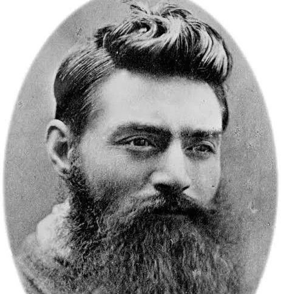

Ned Kelly
Famous voice against corruption


Edward ‘Ned’ Kelly, Dan Kelly, Joe Bryne, and Steve Hart formed the Kelly gang. They became bushranger outlaws and fought against Victorian (Australia) polices after killing 3 policemen.

During the Fitzpatrick incident Ned + Dan Kelly fought against the constable after he attempted to kiss their younger sister Katie. This led to Fitzpatrick setting shot in the wrist by the boys. Afterward, Ned and Dan ran into the bush to hide, Ellen (the mother) was arrested from assisting in attempted murder of Fitzpatrick (3 years). The Kelly family found it unfair, and Ned swore vengeance for his mother

The main thing was about the Fitzpatrick incident. It included how Fitzpatrick arrived at Kelly’s home to arrest Dan (Ned’s brother) for stealing horses. This led to (according to the letter) Ned and Dan resisting and shooting Constable Fitzpatrick in the wrist. After this passage, Ned mentioned how Ellen Kelly (mother) was arrested for “aiding” in attempted murder.
He showed resistance in many ways, but some more noticeable would include the Jerilderie letter or his actions. In the Jerilderie letter, it included voicing out is justifications for his committed crimes, his demand for better and exposed his beliefs that the Victorian Government was corrupt. Some actions include robbing banks, ambushing policemen and stealing.
The most prominent battle would be the siege of Glenrowan. It was an organised attack by the Kelly gang, on the police by destroying part of the railway line to ambush the police force. They killed a man to ensure no reinforcements were coming but that plan failed. This led to the gang preparing for battle, all wearing homemade armour. After the battle, 3 members of the Kelly gang were dead, and Ned Kelly (injured) was arrested.
Edward and Ned Kelly defended their sister, Kate, from Fitzpatrick leading a brawl and Constable getting shot in the wrist; this forced them to leave and become outlaws. They fought and managed to kill 3 policemen. After the fight, their mother, Ellen was taken to jail for 3 years while being accused of ‘assisting’ in attempted murder. This made Ned furious as he vowed to take revenge. The family all believed and agreed that this was an unfair judgement. After a while, people found the Jerilderie letter containing Ned voicing his justification for his crimes, his belief that the Victorian Government’s corruption and his will to be treated better. The crimes he committed include robbing banks, stealing, ambushing policemen were all listed as types of resistance. The Glenrowan battle was a finale to his outlaw life with 3 dead and his arrest.
During the hunt for the Kelly gang, 4 policemen camped in the bush. In late 1878, Ned and Dan Kelly, with friends Joe Byrne, Steve Hart, Tom Lloyd junior, had been hiding in the ranges above Mansfield for several months, with warrants for the arrest of the Kelly brothers for the Fitzpatrick incident in Greta. A party of 4 policemen left Mansfield on the 25th of October intending to capture the Kelly brothers. Their names were Kennedy, Lonigan, Scanlan, and McIntyre. The Kelly gang discovered the policemen’s camp and ambushed them on the following day. 3 policemen, Kennedy, Lonigan and Scanlan – with Mclntyre escaping back to Mansfield, sounding the alarm. Within 4 weeks, the four were declared outlaws under an act approved by the Victorian government.
On the evening of 26 June 1880, the Kelly gang prepared for a shoot-out against the police. They murdered Aaron Sheritt, who knew police would send reinforcements from Melbourne by train. They planned to derail the train and ambush the survivors. While waiting, the Kelly gang forced the townsfolk into the Glenrowan Inn. But one resident warned the police, by flagging the rain, of the planned derailment. This then led to a shootout. By the end of the siege at Glenrowan, three of the Kelly gang were dead, and Ned Kelly was captured. In the end, the Inn was burned down by the police during their fight with the Kelly gang.
Constable Alexander Fitzpatrick arrived at Eleven Mile Creek (Kelly’s home) without a warrant to ‘arrest Dan Kelly for horse theft”. He (according to the neighbors and the Kelly family) arrived drunk and tried to kiss Kate Kelly (14 years old). This led to conflict and constable getting shot in the wrist. This made Ned and Dan Kelly flee into the bush, and Ellen Kelly arrested for 3 years in jail (attempted murder).
The Kelly gang robbed the bank to distribute/support their family + friends who were poor. This included others who were in debt and poor.
Ned Kelly has fought the corrupt government in many ways. Many main ones include the Stringybark Creek, Glenrowan, The Fitzpatrick incident and the Robbery of Jerilderie bank. These places were all significant battles in his journey of an outlaw like Ned Kelly.
Many people believe he fought for both social justice and self-preservation in his battles against Victorian police. From his perspective, he thought that he was diving the right thing while Constable Fitzpatrick claimed that Ned Kelly was just selfish and an arrogant person.
In 1879, Ned Kelly and the gang robbed the Jerilderie bank. It was done because they believed they would destroy the mortgage documents and other securities (including collateral loans) to help the poor. They burned them all because they believed that these things “crushed the life’s blood out of the poor” (quoted from the Kelly gang). These statements suggest that those specific documents held power over the poor, controlling them with papers that limit their freedom and justice.